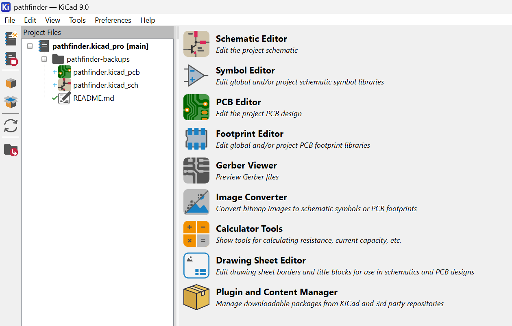

ALERT: To make a Hermes, you need to have completed Pathfinder. Unless you're confident in your ability to design and make a PCB without heavy guidance. Pathfinder is super quick--and the guide is insanely detailed and beginner friendly. If you're looking to get into hardware, step 1 is Pathfinder and step 2 is Hermes.
To download and install KiCAD, follow the tutorial on the pathfinder website! Step 1 is setting up KiCAD.
To start your download, go to kicad.org/download

To properly track your time spent on Hermes, download Cyao's KiCAD Wakatime! Each time you open KiCAD, make sure to open KiCAD wakatime so that it tracks. If you don't open it every time you work on your PCB, it won't track your time.
When you create a new project, go to KiCAD Wakatime's settings and set the filepath of your project.